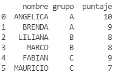
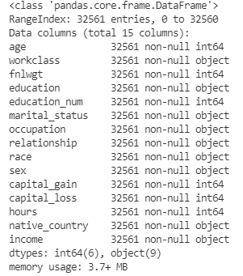
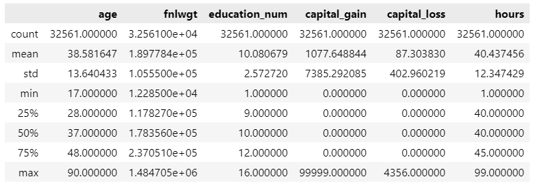
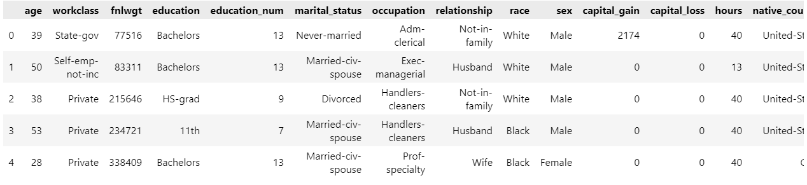
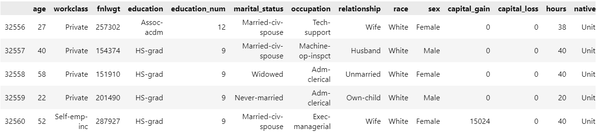
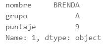
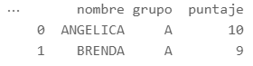
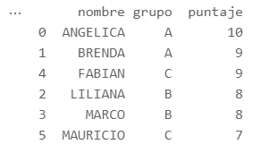
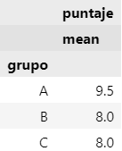
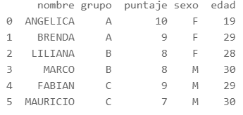

Introducción¶
En esta sección aprenderemos acerca de cómo leer datos en python, así como el manejo de datos con python.
Para manejar datos en python se usan librerías especiales. En particular se usará la librería pandas para realizar estas operaciones.
El primer paso es llamar las librerías que se utilizarán en la sesión.
1 2 3 | |
La librería pandas es la que nos permite manejar objetos de tipo dataframe que es la estructura de datos usada en python para almacenar la información. La librería numpy nos permitirá crear arreglos y manipularlos de forma más fácil. La librería os nos ayudará a usar funciones y otras utilidades del sistema operativo.
Los códigos mostrados se realizaron en un cuaderno interactivo de python (archivo ipynb) usando Visual Studio Code.
Para una referencia completa, visite la documentación de pandas.
Creando un objeto DataFrame¶
La forma más sencilla de crear un dataframe es mediante la definición de un diccionario con las listas definidas y posteriormente se usa la función DataFrame del paquete pandas para crear un objeto DataFrame en donde se almacenará la información. El objeto creado hereda las claves del diccionario y los valores se escriben en el dataset.
Para introducir datos de manera manual, se puede usar la siguiente sintaxis:
1 2 3 4 5 6 7 8 9 10 | |
La siguiente imagen muestra el dataframe definido.

Note que el objeto creado es un objeto especial. Si escribimos en la consola el comando type(mi_base), obtenemos la siguiente información.
pandas.core.frame.DataFrame
Como tal, este objeto va a tener diversos métodos para manipularlo o conocer sus propiedades. Consulte la referencia de DataFrame para saber más de sus propiedades.
Lectura de archivos externos¶
Para leer archivos externos, por ejemplo de tipo csv, se usa la función read_csv de la librería pandas para leer los datos.
El siguiente código muestra cómo leer un archivo que está almacenado en la misma carpeta del directorio de trabajo.
1 2 3 | |
Como puede observarse, datos es un objeto DataFrame que se define gracias a la función read_csv() de pandas. En este caso, el archivo estaba en la misma carpeta que el directorio de trabajo.
Para conocer cual es el directorio de trabajo, se puede usar el siguiente comando:
1 2 | |
El resultado devolverá la ruta del directorio de trabajo, por ejemplo:
‘c:\Users\Usuario\Documents\proyectos\python\src’
Para modificar el directorio de trabajo, se puede usar el siguiente código:
1 | |
Por lo que solo basta copiar los archivos a esta carpeta para poder importarlos sin problema.
Si el archivo se encuentra almacenado en la web, únicamente se debe escribir la dirección entre comillas dentro de la función read_csv() y automáticamente será leido y almacenado en un objeto DataFrame.
El siguiente código ejemplifica su uso:
1 2 3 4 5 | |
Exploración de la base¶
Se puede obtener información de un objeto DataFrame usando el siguiente comando.
1 | |
La siguiente imagen muestra el resultado obtenido de la consola.

Para ver un análisis descriptivo de las variables numéricas datos se puede usar el método describe.
1 | |
El resultado se muestra a continuación

Métodos sin argumentos
Note que los métodos anteriores no requieren ningún argumento, porlo que solo se ponen los paréntesis vacíos.
Para visualizar los primeros 5 datos se puede usar este código
1 | |
La siguiente imagen muestra las primeras 5 observaciones

De manera similar, los últimos 5 registros se pueden ver con este código
1 | |
La siguiente imagen muestra las últimas 5 observaciones

Argumentos opcionales
Algunos métodos no requieren argumentos, mientras que en otros son opcionales. Los métodos head() y tail() tienen un valor predeterminado de 5.
Al igual que otros lenguajes de programación, es posible acceder a los elementos de un dataframe. Para ello se puede hacer uso del método iloc.
El siguiente código muestra cómo acceder al segundo renglón de un dataframe y el resultado que se obtiene.
1 | |
El resultado se muestra a continuación

Método sin paréntesis
Note que el método iloc no usa paréntesis.
Transformación y manipulación de un dataframe¶
Al igual que en otros lenguajes de programación, es posible modifcar las tablas en python a través de los métodos de los objetos dataframe proporcionados por el paquete pandas.
En esta sección se abordarán temas acerca de como manipular y transformar bases que estén almacenadas en un objeto dataframe, tales como realizar filtros, unir tablas, agrupar datos, entre otras operaciones.
Filtrado de base¶
Para filtrar una base, se puede usar el método query() para filtrar una base usando condicionales. A diferencia de otros métodos, se requiere de una expresión entrecomillada con una expresión lógica a evaluarse.
El siguiente ejemplo muestra cómo seleccionar a alumnos del grupo A.
1 2 | |
El resultado se muestra a continuación

Para saber más, consulte la documentación del método query().
Ordenando una base¶
Para ordenar una base, se usa el método sort.values() en donde se le pasa una lista con los nombres de las variables a ordenar.
El siguiente código muestra su uso. Note que el método requiere al menos el argumento by y se pide que guarde la base ordenada en un nuevo objeto dataframe.
1 2 | |
La siguiente imagen muestra el resultado, note que la base se ha guardado en un nuevo objeto.

Para más información acerca del método sort.values() consulte la documentación del método sort_values.
Datos agrupados¶
En el paquete pandas también se incluye un método para crear datos agrupados por una o más variables.
El siguiente código muestra su uso
1 | |
objeto retornado
El método groupby regresa un objeto DataFrameGroupBy, por lo que no podría ser visualizado. Este objeto se suele utilizar para realizar agregados por cada grupo.
Los datos agrupados son útiles para obtener estadísticas descriptivas por grupos. El siguiente ejemplo ejemplifica su uso mediante el método aggregate().
1 | |

Para más información visite la documentación del método groupby y cómo realizar agregados.
Uniones de bases¶
Para realizar una unión de dos o más bases, se usar el método merge() de un dataframe para unirlo con otro. Se puede guardar el nuevo objeto en un nuevo dataframe.
El siguiente ejemplo muestra cómo unir 2 bases que tienen la misma llave.
Alumnos:
| nombre | grupo | puntaje |
|---|---|---|
| ANGELICA | A | 10 |
| BRENDA | A | 9 |
| FABIAN | C | 9 |
| LILIANA | B | 8 |
| MARCO | B | 8 |
| MAURICIO | C | 7 |
Información:
| nombre | sexo | edad |
|---|---|---|
| ANGELICA | F | 19 |
| BRENDA | F | 29 |
| LILIANA | F | 28 |
| MARCO | M | 30 |
| FABIAN | M | 29 |
| MAURICIO | M | 30 |
El siguiente código muestra la unión de las dos bases.
1 2 | |
En la siguiente imagen se ilustra el resultado.

Para saber más sobre cómo unir 2 o más bases o realizar otro tipo de uniones, visite la documentación del método merge.